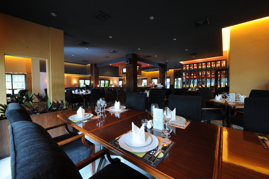
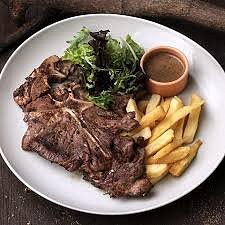
Price: ~200k / person
A pretty expensive restaurant. But it's near to
the city, and I have never tried it before.
Just don't order the wagyu cut haha.
But I feel
that it's worth it. It looks good and I really want to try it for real.
Prices seem reasonable and all that.
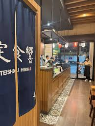
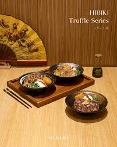
Price: ~125k / person
It's not too bad. I feel like the Palang Merah branch
is nicer and prettier, and it's worth a shot again.
Not so expensive and the taste is nice.
We've ever been here before, and I've ate here a lot of times,
but at the same time I enjoy the food and I think the atmosphere suits us.
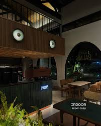
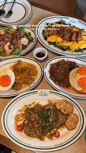
Price: ~125k / person
It's actually quite good - I can see myself eating here again. And I feel like the atmospehre is not too bad. The portion
is okay, and it's quite creative. I like the salted egg and the pasta.
It should be better at night, since the vibe is just more suited for night. I feel like the
staff is kind and the food is good for a standard cafe price.
Ate here couple of times but never with you, so I figured it's worth a shot.
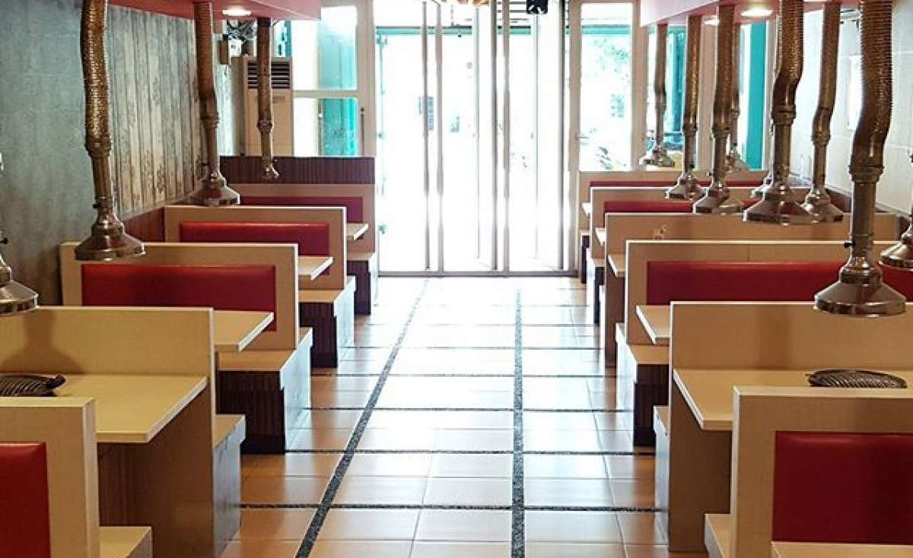
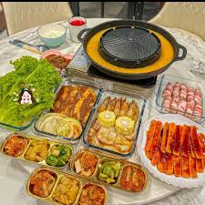
Price: ~100-150k / person
Ate here a few times - turns out to be very good. Especially for it's price, and the portion, the meat is properly marinated,
tender, we can cook it ourselves to ensure it's cooked - it's so underrated.
I can tell you that this is one of the best pork in my life. The way
it's marinated tastes so good really. And it's usually not crowded, so
food will be fast.
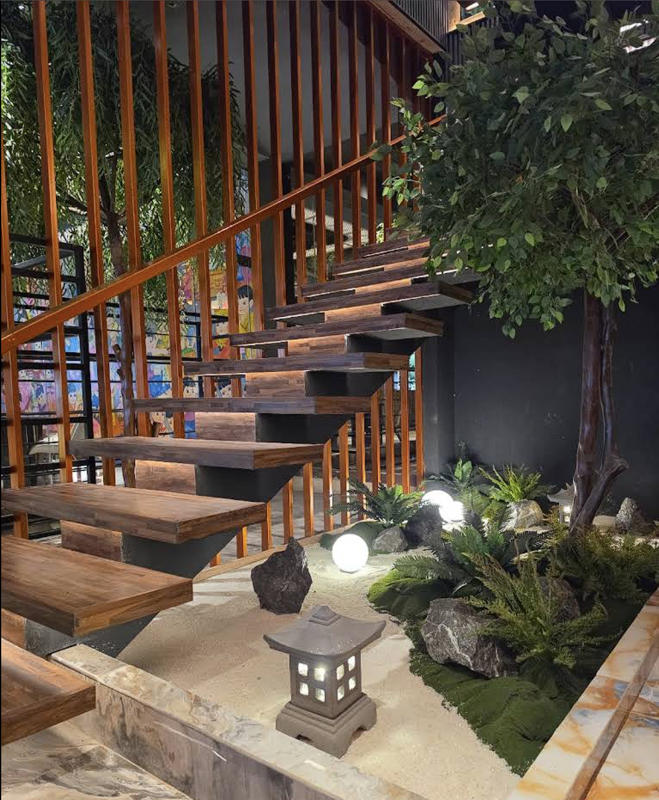
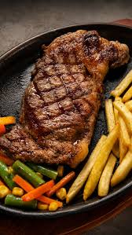
Price: ~300k / person
One of the best steaks in Medan for real - it's so tender, and the flavor's so right. May be very pricey,
but I believe that it's so worth it.
We ate here last time and I still remembered the taste. It's so
juicy and properly cooked - to the point I went there a second time with
my mom.
I just saw the new restaurant and it looks so pretty, even from the outside.
I thought of you immediately - I want to visit there again.
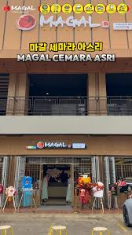
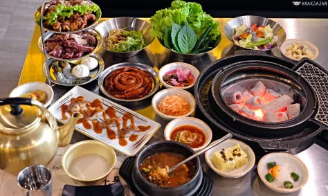
Price: ~150k / person
Maybe a bit overrated but it's still very good. I've been there a few times and every single time,
it's nice.
The vegetables, sides, and all combines really well into one dish. Although slightly expensive,
and the portion isn't really big, I do think that we should try it at least once you know?
I've ate here with my parents a few times and it never disappoints.
*available at Cambridge as well, but there's traffic there
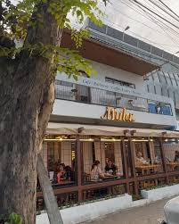
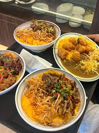
Price: ~60k / person
It's really not bad, especially for it's price. Although quite small, so if possible we need
to go during weekdays. The cheesecake is fantastic.
You told me you always wanted to visit here, when I told you that I went to Mula like last year.
I never forgot and I think that it's a good deal for it's price. Not expensive, but
the food is reasonable.
Cheesecakes may be expensive though, but one is worth a shot.
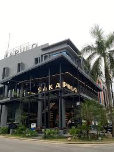
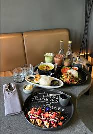
Price: ~150k / person
You told me it's nice. It's worth a try IG. Remember how you told me about how good
it is and how you wanted to eat with me?
We almost went here, until your parents called you haha. Remember?
I still look forward to eating here though.. Looks good.